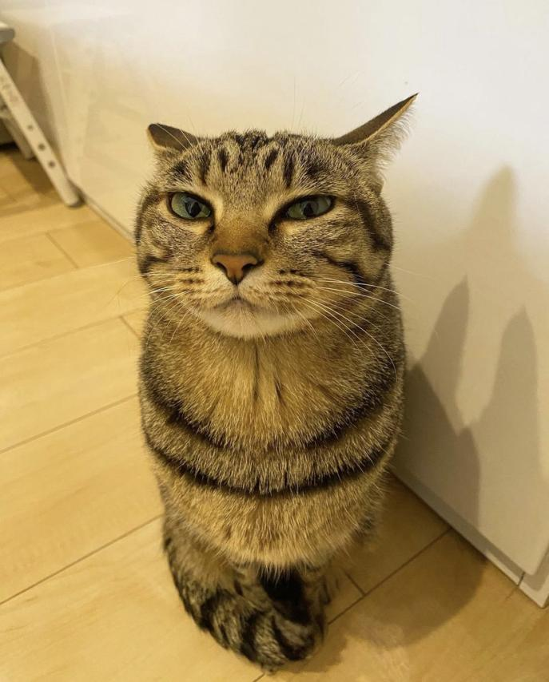

My role was mainly to make the common log.
However i also made my own log aswell
Benjamin

What was my role?
What did I do?
I basically wrote the common log
I wrote a bit about what we did in a word document so that i wouldn't forget
Then i took what i wrote in the document, and wrote it in the log.
I wrote a bit about what we did in a word document so that i wouldn't forget
Then i took what i wrote in the document, and wrote it in the log.
What problems did I face?
For me, and i think everyone in the group was that we kind of lacked productivity
I faced a problem with not knowing how to make the common log
But that problem was fixed by getting Julian to help
I faced a problem with not knowing how to make the common log
But that problem was fixed by getting Julian to help